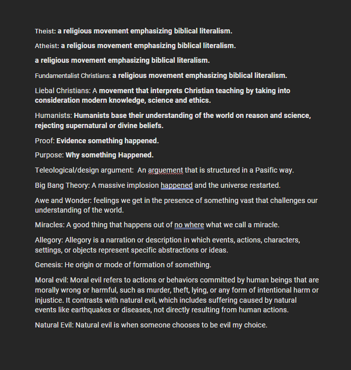

Week 1: PRE Homework
- Theist: a religious movement emphasizing biblical literalism.
- Atheist: a religious movement emphasizing biblical literalism.
- Fundamentalist Christians: a religious movement emphasizing biblical literalism.
- Liberal Christians: A movement that interprets Christian teaching by taking into consideration modern knowledge, science, and ethics.
- Humanists: Humanists base their understanding of the world on reason and science, rejecting supernatural or divine beliefs.
- Proof: Evidence something happened.
- Purpose: Why something happened.
- Teleological/design argument: An argument that is structured in a specific way.
- Big Bang Theory: A massive implosion happened and the universe restarted.
- Awe and Wonder: feelings we get in the presence of something vast that challenges our understanding of the world.
- Miracles: A good thing that happens out of nowhere, what we call a miracle.
- Allegory: Allegory is a narration or description in which events, actions, characters, settings, or objects represent specific abstractions or ideas.
- Genesis: The origin or mode of formation of something.
- Moral evil: Actions or behaviors committed by human beings that are morally wrong or harmful.
- Natural Evil: Suffering caused by natural events like earthquakes or diseases.

Back to Home